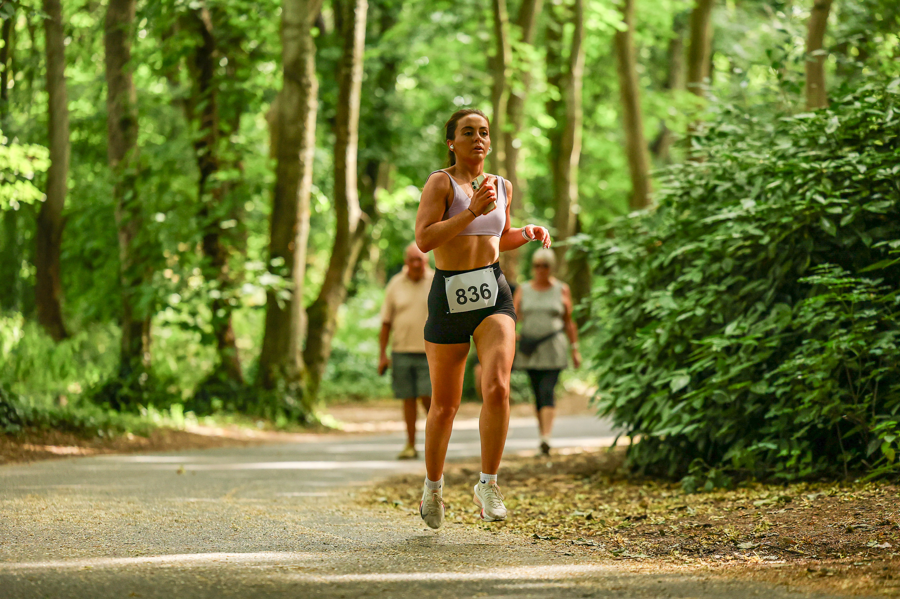
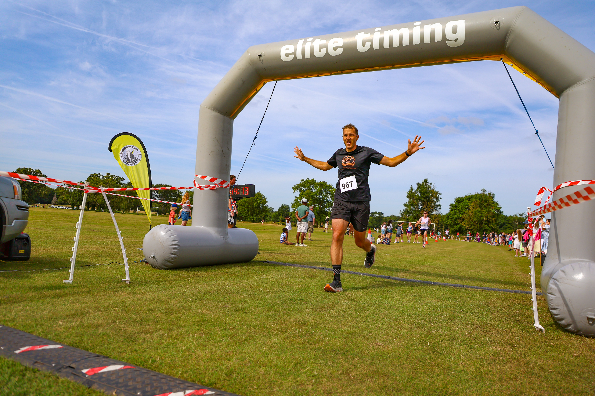

The 11th Malahide Castle 10km sent runners through the grounds of Malahide Castle on 19 July 2026, with Image Media's Eduardo Castro and Paulo Nomade covering the race for Summer Park Series.

Summer Park Series staged the 11th Malahide Castle 10km on Sunday 19 July 2026, marking the 12th anniversary of the series' presence at the Co. Dublin venue. Runners set off at 10:00 from the demesne beside Malahide Castle, tackling a route mixing path, trail and grass through the parkland, with organisers flagging a drag up to the finish line. The field was capped at 500 entrants, with chip timing, a water station at the 5km mark, and a finisher's medal and technical neck buff awaiting competitors at the line.

No official results, finisher counts or winners had been published for the 2026 race at the time of writing. Registration ran from 08:15 to 09:45 near the helipad beside the castle and the Avoca car park, with organisers noting that results would be circulated to competitors by email and posted to the Summer Park Series website and social channels in due course.

Event coverage at the Malahide Castle 10km was provided by Eduardo Castro and Paulo Nomade for Image Media.